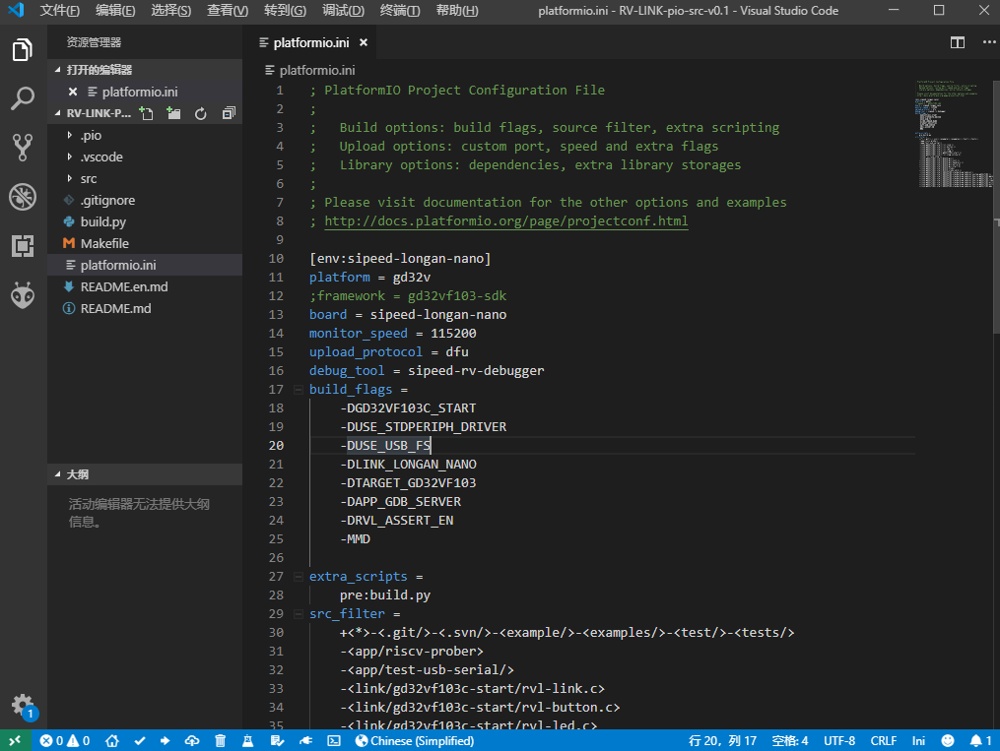

中文
中文使用 RV-LINK
什么是 RV-LINK
RV-LINK 是一个基于 RISC-V 开发板的仿真器固件，通过烧写 RV-LINK 固件， 可以将 Sipeed Longan Nano 开发板变成一个 jtag 调试器，用来调试另一块 Longan 或者其他支持 jtag 调试的开发板。 RV-LINK 项目地址: https://gitee.com/zoomdy/RV-LINK
烧写 RV-LINK 固件
使用 PlatformIO 工程一键烧录
下载 RV-LINK 源码
项目源码下载地址：http://dl.sipeed.com/LONGAN/Nano/Tools/RV-LINK-pio-src-v0.1.zip
也可以从RV-LINK官方项目下载: https://gitee.com/zoomdy/RV-LINK
使用 VSCODE 打开工程目录
将上面下载的源码解压到单独的文件夹
然后使用 VSCODE 打开源码文件夹如下图所示：
通常使用 DFU 方式烧录固件，不需要修改配置文件。(使用 DFU 方式下载请安装 libusb 驱动, 参考使用Zadig安装驱动)
如果需要更改烧录方式，可以通过修改
platformio.ini文件来修改， 具体配置方式请参考：修改工程配置文件使用 PIO 烧录固件
连接开发板，使开发板进入烧录模式后，点击左下角的箭头符号即可进行烧录。
烧录成功后，可以看到开发板上的绿灯闪烁，将开发板连接到电脑USB口之后，可以在设备管理器中看到多出了一个串口设备。此时 Longan 板子就成功变成了 RV-LINK 调试器。
其他烧录方式
参考文档： 将 Longan Nano 开发板变成 RISC-V 仿真器
使用 RV-LINK 调试
连接开发板
将刷好 RV-LINK 固件的开发板与待调试开发板 jtag 连线按下表连接
| RV-LINK | 待调试开发板 |
|---|---|
| JTDO | JTDO |
| JTDI | JTDI |
| JTCK | JTCK |
| JTMS | JTMS |
| 3V3 | 3V3 |
| GND | GND |
WIN7 用户安装 GD 串口驱动
见此链接安装 USB 串口驱动
在 PlatformIO IDE 中使用 RV-LINK
RV-LINK 在 PlatformIO IDE 可以和其他调试器一样，支持一键启动调试。
只需要在工程的 platformio.ini 配置文件中，指定调试器选项和调试器端口选项。
示例代码
[env:sipeed-longan-nano]
platform = gd32v
framework = gd32vf103-sdk
board = sipeed-longan-nano
monitor_speed = 115200
upload_protocol = rv-link ; rv-link下载选项
debug_tool = rv-link ; rv-link调试选项
debug_port = COM2 ; 使用rv-link 必填此项 调试器串口
在其他平台使用 RV-LINK
参考 RV-LINK WIKI